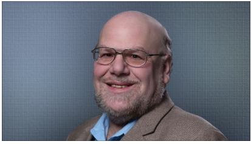
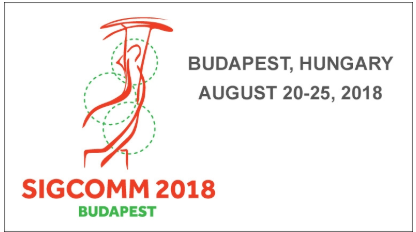

|  |
| PEOPLE OF ACM INTERVIEW |
| Meet Jim Hendler |
| James A. “Jim” Hendler is the Director of the Institute for Data Exploration and Applications and the Tetherless World Professor of Computer,
Web and Cognitive Sciences at Rensselaer Polytechnic Institute. He also serves as the Director of the joint Rensselaer-IBM HEALS project. He is an ACM
Fellow and Chair of ACM’s US Technology Policy Committee. “I look forward to helping to make ACM a trusted, 'must-consult' organization for policy makers.” |
|
|
| KDD 2018, August 19 to 23, London, UK↗ |
| The SIGKDD Conference on Knowledge Discovery and Data Mining brings together researchers and practitioners from data science, data mining, knowledge
discovery, large-scale data analytics, and Big Data. The event includes 27 workshops, 37 tutorials, and keynotes by ACM fellow Jeannette Wing (Columbia University),
David Hand (Imperial College), Alvin E. Roth (Stanford University), and Yee Whye Teh (University of Oxford/Deepmind). |
|
|  |
| SIGCOMM 2018, August 20 to 25, Budapest, Hungary↗ |
| The flagship annual conference of the ACM Special Interest Group on Data Communication focuses on the applications, technologies, architectures, and protocols
in the computer communication field. Workshops will cover IoT, Big Data analytics, mobile edge communications, and more. Jennifer Rexford (Princeton University),
2016 Athena Lecturer and 2004 Hopper Award recipient, will keynote. |
|